브리핑
피부 점수는 80점
컨디션은 좋지만 수분이 금방 빠져나가는 타입으로 보여요. 속부터 채우는 촉촉한 케어가 필요해요.
피부 장벽과 탄력은 안정적이지만 수분 손실 지표가 다소 높습니다.
피부 장벽과 탄력은 안정적이지만 수분 손실 지표가 다소 높습니다.
피부 그래프

색소
주름
탄력
탄력
좌우 대칭
수분
루틴
저자극 클렌징
수분 토너 충분히 흡수
히알루론산/판테놀 에센스
보습크림으로 수분 잠금
자외선 차단
오늘의 추천 스타일
Cheek
톤 대비 결과, 저채도 핑크가 가장 안정적입니다.
Peach
채도 분석 결과, 저채도 피치가 가장 안정적입니다.
Cheek
눈동자 브라운 컬러가 자연스럽게 균형을 맞춥니다.
Wavy
얼굴 윤곽 분석 결과 웨이브 볼륨이 입체감을 줍니다.
저장하기